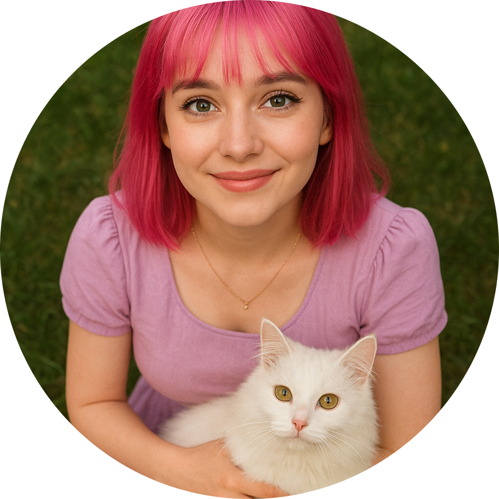
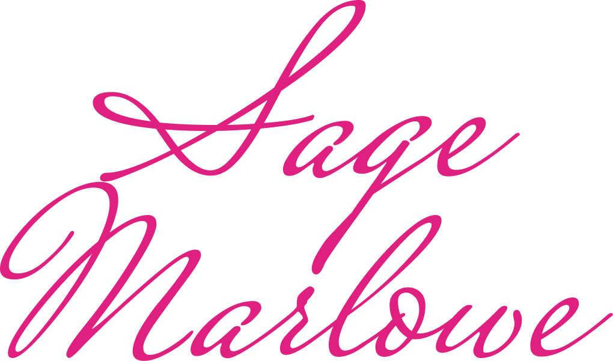
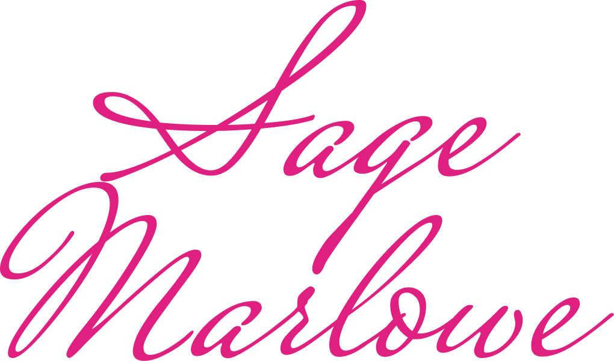

Our Origin Story
(the important stuff)
2010 — the Forbidden Attic
We discoverd St Agatha’s attic was haunted by an elderly Victorian ghost who taught us the basics of warding, banishment, and how to properly brew tea in a kettle that absolutely should not have still functioned.
2015 — Our first paid job
A neighbour offerd us £10 to convince a poltergeist to stop rearranging her garden gnomes. We succeed (barely). The poltergeist left a thank-you note and a single, unsettlingly warm pebble.
2022 — two Girls one Charm is born
We filed as an Independent Supernatural Sanitation Service. Sage designed the logo. Rowan wrote the health-and-safety documentation in Latin, out of spite.
2023 — the First Major case
A wyrd basement entity tried to crawl through a client’s washing machine. Sage distracted it with scented candles; Rowan bound it with a perfect containment sigil. We celebrate with curry and some new notebooks.
2024 — Business booms
Word somehow started to spread. We got hired for hauntings, demon tantrums, ghost therapy, and “general vibes clean-up.” We upgraded our kit, adopted a semi-haunted book, and sort of became the neighbourhood go-to supernatural fixers.
2025 — Present day
two Girls one Charm now handles everything from mischievous Myrlings to full poltergeist melodrama. We don’t claim to banish everything — just convince entities, kindly but firmly, that it’s time to move along.

Sage Marlowe
Co-Founder & Certified Positivity Ward Specialist
Bright, curious, and impossible to spook, Sage brings sunshine (and glitter) to even
the darkest hauntings. She believes every spirit deserves closure — and every cleansing deserves flair. When
she’s not banishing ghosts, she’s knitting charm pouches for stray cats.
sage.marlowe@onecharm.uk
(+44) 7400 66 77 88
Rowan Vale
Co-Founder & Lead Containment Operative
Stoic, sharp-eyed, and fluent in Latin insults, Rowan handles the heavy banishing work with
surgical precision. She’s quiet until she isn’t — and when she speaks, the entities listen. Despite her deadpan
exterior, she’d burn a circle of salt around the world for Sage.
rowan.vale@onecharm.uk
(+44) 7466 40 40 66
 
